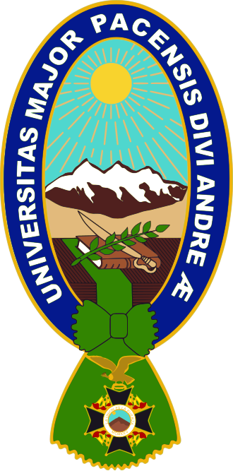
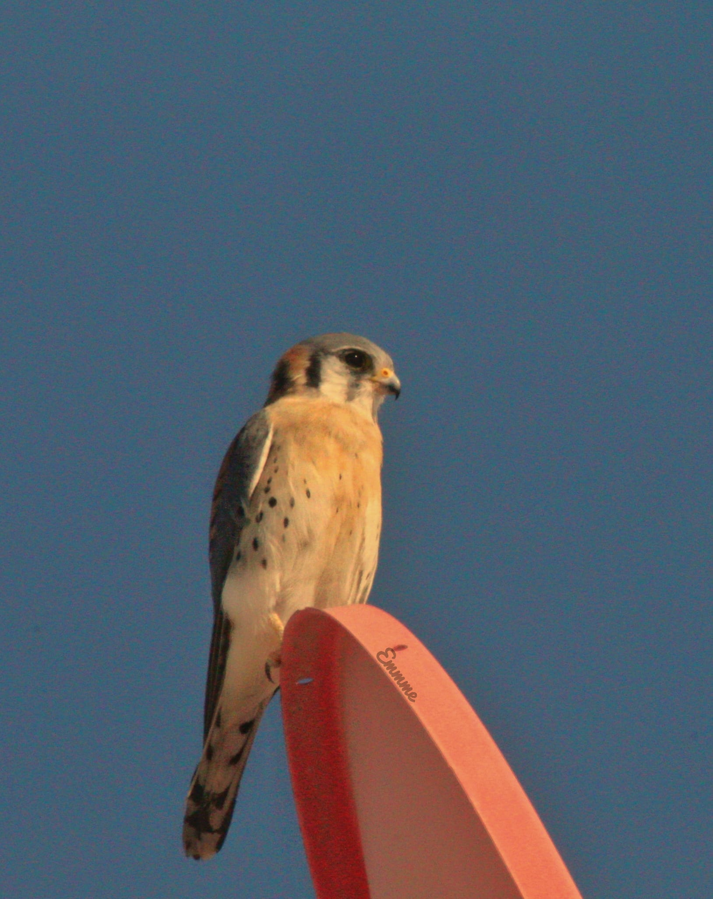
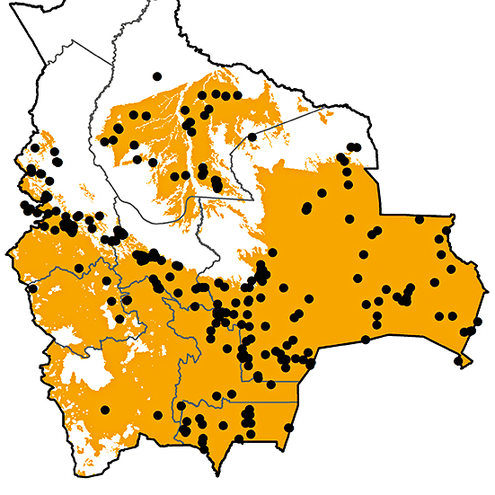
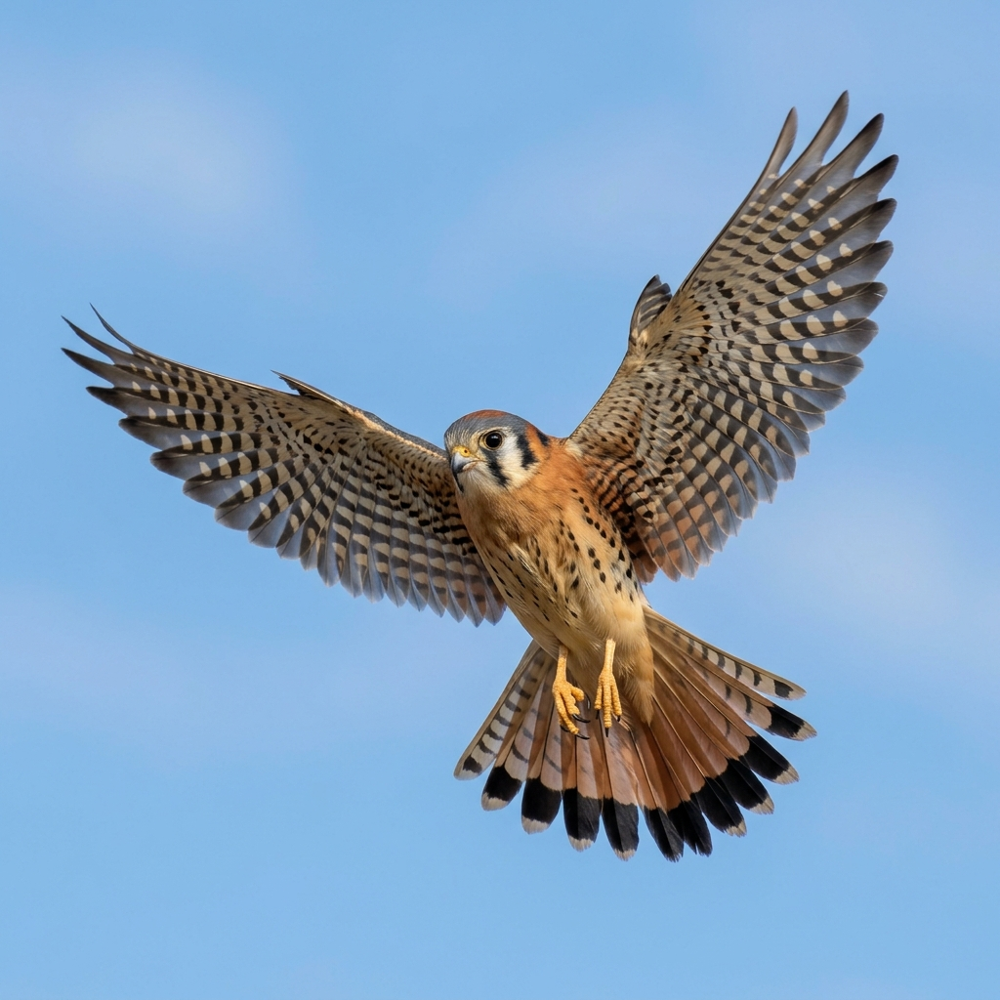
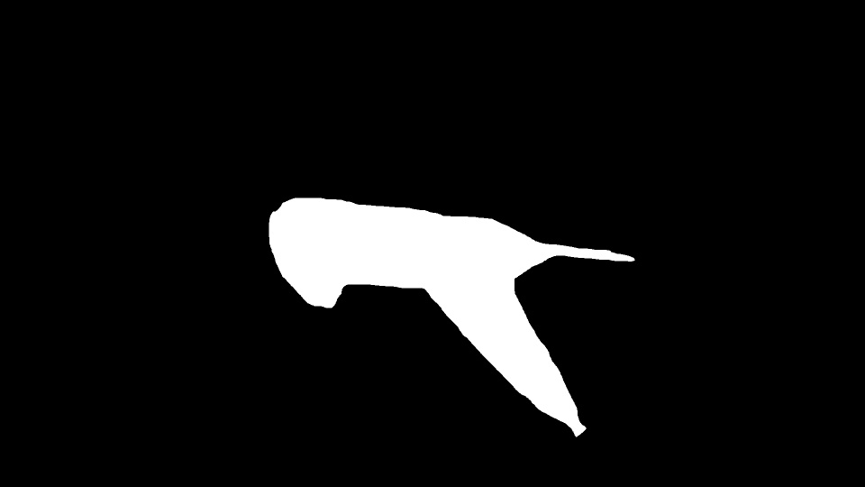
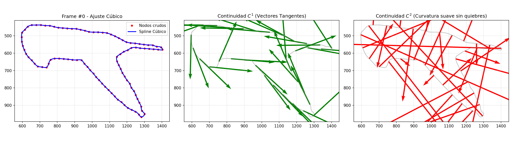

Métodos Numéricos — Desafío FinalModelado exhaustivo del vuelo del Cernícalo Americano: extracción automática de datos, interpolación con Splines Cúbicos (Matriz Inversa) y análisis espectral de Fourier.
El Cernícalo Americano (Falco sparverius) es el halcón más pequeño y abundante del continente americano. En los cielos de La Paz, Bolivia, se le puede observar frecuentemente planeando sobre los valles y laderas de la ciudad, aprovechando las corrientes térmicas andinas.
Lo que hace a esta especie extraordinariamente interesante para un estudio de métodos numéricos es su capacidad de realizar vuelo cernido (hovering): un modo de vuelo estacionario donde el ave se mantiene suspendida en un punto fijo del espacio, batiendo sus alas a alta frecuencia mientras mantiene la cabeza completamente inmóvil para localizar a sus presas.

Se le observa sobrevolando los cañones urbanos de la hoyada paceña, desde la zona Sur hasta El Alto. Utiliza postes, cables de luz y cornisas de edificios como perchas de caza. Opera entre los 2.800 y 4.200 m.s.n.m., adaptado perfectamente a la baja presión del altiplano.
Su capacidad de hovering (suspenderse en el aire) lo convierte en un depredador único. Bate las alas a ~6 Hz mientras mantiene la cabeza inmóvil, detectando insectos y roedores con su visión ultravioleta desde 10–30 m de altura.

Presente en todo el territorio boliviano: altiplano, valles interandinos, yungas y llanos orientales. En La Paz, Cochabamba y El Alto es la rapaz más visible en zonas periurbanas. Su nombre quechua-aymara local es killichu.

El aleteo periódico del vuelo cernido genera una señal biomecánica limpia y repetitiva, ideal para modelar con Splines Cúbicos y analizar con Fourier. Su frecuencia biológica documentada es de 5.0–7.5 Hz (Tobalske et al., 2003).
Construimos un tracker automatizado que aísla la silueta del ave en los 120 frames del video mediante umbralización y morfología matemática en Python (OpenCV). De cada frame se extraen 100 puntos equiespaciados del contorno.
def segmentar_ave(frame):
gray = cv2.cvtColor(frame, cv2.COLOR_BGR2GRAY)
mask = cv2.inRange(gray, 0, 114) # Umbral empírico
k3 = np.ones((3,3), np.uint8)
k7 = np.ones((7,7), np.uint8)
mask = cv2.morphologyEx(mask, cv2.MORPH_OPEN, k3, iterations=1)
mask = cv2.morphologyEx(mask, cv2.MORPH_CLOSE, k7, iterations=3)
return maskDesliza el control para recorrer los frames del video. A la izquierda se muestra la máscara binaria generada por el algoritmo; a la derecha, los 100 puntos extraídos superpuestos sobre la fotografía original.

Valores numéricos absolutos (píxeles) que alimentan la interpolación matemática.
Los 100 puntos crudos forman un polígono discreto. Para obtener una curva suave con continuidad $C^2$, construimos un sistema matricial $A \cdot c = b$ y lo resolvemos calculando explícitamente la Matriz Inversa ($A^{-1}$), siguiendo la metodología de clase.
Donde $a_i = y_i$ y los coeficientes $b_i, c_i, d_i$ se determinan imponiendo continuidad $C^0$, $C^1$ y $C^2$.
Las condiciones de continuidad generan un sistema tridiagonal simétrico. Con frontera natural ($c_0 = c_n = 0$):
$h_i = x_{i+1} - x_i$, y cada componente del vector $b$ es $3\left(\frac{y_{i+2}-y_{i+1}}{h_{i+1}} - \frac{y_{i+1}-y_i}{h_i}\right)$.
# 1. Armar Matriz A
A = np.zeros((sz, sz))
for i in range(sz):
A[i, i] = 2 * (h[i] + h[i+1])
if i > 0: A[i, i-1] = h[i]
if i < sz - 1: A[i, i+1] = h[i+1]
# 2. Armar Vector b
rhs = np.zeros(sz)
for i in range(sz):
rhs[i] = 3 * ((y[i+2] - y[i+1])/h[i+1] - (y[i+1] - y[i])/h[i])
# 3. Hallar Matriz Inversa y multiplicar
inv_A = np.linalg.inv(A)
c_inner = np.dot(inv_A, rhs)Mueve el slider para ver en tiempo real cómo la curva analítica atraviesa suavemente todos los puntos discretos. Puedes hacer zoom dentro del gráfico.
Los vectores tangentes (verde) y de curvatura (rojo) confirman que no existen discontinuidades en las derivadas primera ni segunda a lo largo del contorno.

A partir del bounding box y los contornos suavizados, extraemos la amplitud del aleteo $H(t_i)$ midiendo la diferencia de $Y$ en cada frame:
Con la señal $H(t)$ extraída, aplicamos la DFT para descomponer el movimiento periódico en sus componentes de frecuencia:
El pico dominante en el espectro $|Y[k]|$ corresponde a la frecuencia fundamental de aleteo.
# Restamos la media (componente DC)
sig = H_interp - np.mean(H_interp)
N = len(sig)
# Transformada rápida para señales reales
Y = np.fft.rfft(sig)
freqs = np.fft.rfftfreq(N, d=1/fps)
amps = np.abs(Y) / N
# Búsqueda del pico principal
mask_f = (freqs >= 1) & (freqs <= 20)
f_aleteo = freqs[mask_f][np.argmax(amps[mask_f])]El gráfico superior muestra la señal $H(t)$ en el dominio del tiempo; el inferior, su espectro en frecuencias donde se identifica el pico de aleteo.
Correlación paramétrica $W(t)$ vs $H(t)$. La trayectoria cíclica cerrada confirma el movimiento armónico repetitivo del aleteo.
Al integrar los tres módulos matemáticos (CV + Splines + FFT), obtenemos una simulación que reconstruye el contorno del ave frame a frame. El panel inferior muestra en tiempo real cómo la señal $H(t)$ coincide con el movimiento biológico del cernícalo.